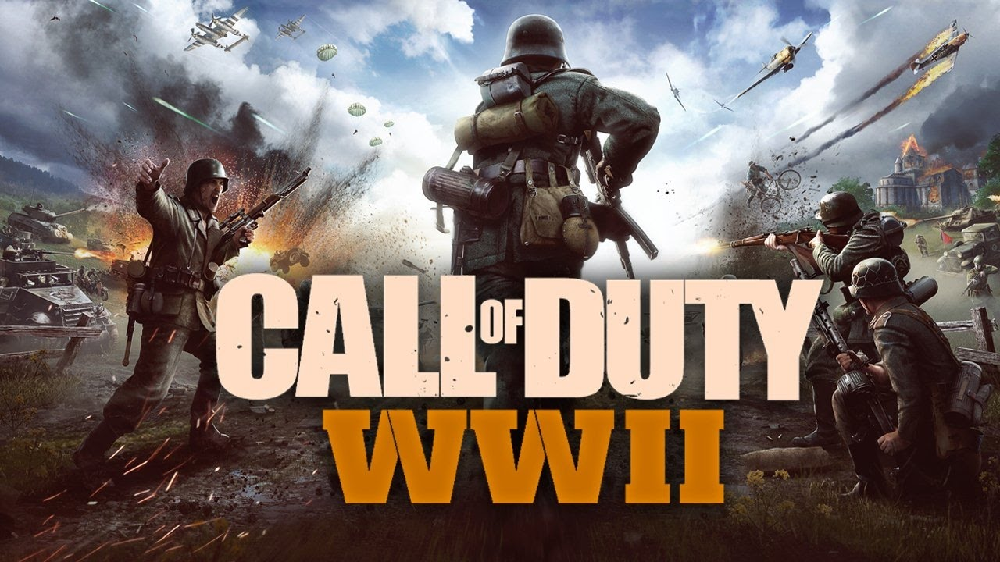

Действие игры разворачивается во времена Второй мировой войны, с акцентом на европейском театре военных действий, включая высадку в Нормандии и освобождение Парижа. Игра стремится к реализму, воссоздавая ключевые события и атмосферу войны, однако допускает некоторые упрощения и драматизацию ради игрового процесса. Например, оружие и техника представлены с высокой точностью, но сюжетные линии и персонажи часто вымышлены.

Год выпуска: 2017
Разработчик: Sledgehammer Games
Достоверность: 7/10
Игра недоступна в Российском Steam
Купить на Plati.Market
Разработчик: Sledgehammer Games
Достоверность: 7/10
Игра недоступна в Российском Steam
Купить на Plati.Market
Минимальные требования:
Операционная система: Windows 7 64-Bit и новее
Процессор: Intel Core i3 3225 3.3 GHz или AMD Ryzen 5 1400
Оперативная память: 8GB RAM
90GB свободного места на диске
Видеокарта: Nvidia GeForce GTX 660 @ 2 GB / GTX 1050 или ATI Radeon HD 7850 @ 2GB / AMD RX 550
Операционная система: Windows 7 64-Bit и новее
Процессор: Intel Core i3 3225 3.3 GHz или AMD Ryzen 5 1400
Оперативная память: 8GB RAM
90GB свободного места на диске
Видеокарта: Nvidia GeForce GTX 660 @ 2 GB / GTX 1050 или ATI Radeon HD 7850 @ 2GB / AMD RX 550